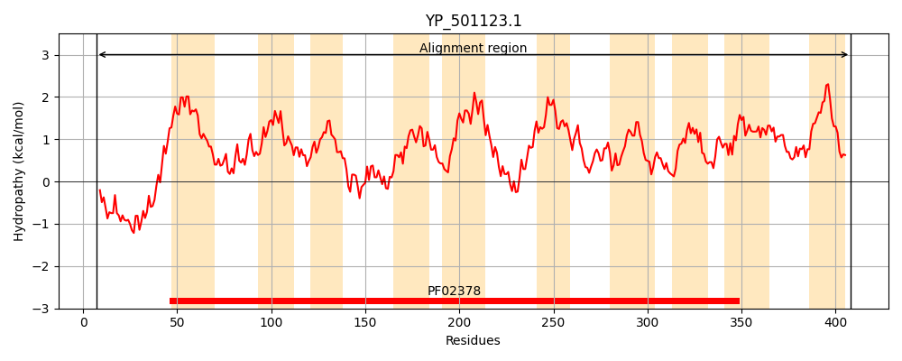
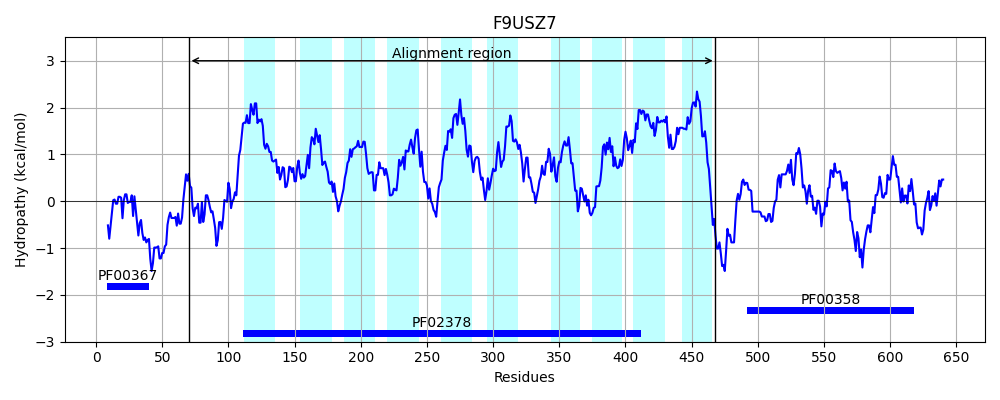
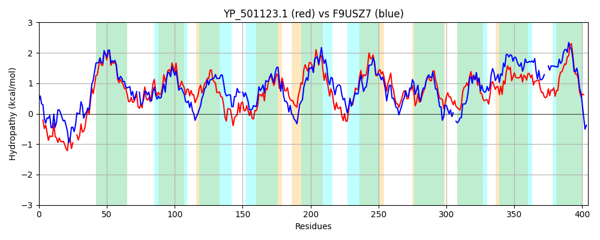

Hit Accession: F9USZ7
Hit TCID: 4.A.1.2.19
Hit Description: gnl|BL_ORD_ID|4503 gnl|TC-DB|F9USZ7|4.A.1.2.19 PTS system, oligosucrose-specific EIIBCA component OS=Lactobacillus plantarum (strain ATCC BAA-793 / NCIMB 8826 / WCFS1) OX=220668 GN=pts1BCA PE=4 SV=1
Mach Len: 404
e:0.000000
Query TMS Count : 10
Hit TMS Count: 10
TMS-Overlap Score: 9.500000
Predicted Substrates:CHEBI:50699;oligosaccharide
BLAST Alignment:
Score: 1054 , Bit scores: 410 bits, E-value: 1.2e-138, Alignment length: 404, Percentage identity: 53
Query: 7 NKVFSELEKLTGKEASTTSEVKAQSA--KNMNPLQRFVKMLSDIFVPIIPAIVAGGLLMGLNNILTAKDLFFSGKSLIDVYSQFAGLAEMINVFANAPFTLLPILIGFSAAKRFGGNPFLGAALGMILVHPSLMSAYDFPKAVEAGKAIPYWDVFGLHINQVGYQGQVLPMLVAAYILASIEKGLRKVIPTVLDNLLTPLLSIFITAFLTFSFVGPITRQLGYWLSDGLTWLYEFGGAIGGLIFGLLYAPIVITGMHHSFIAVETTLIADATKTGGSFIFPIATMSNVAQGGAAIAAFFIIKQNKKLKGVASAAGISALLGITEPAMFGVNLKLRYPFIGAIVGSGIGSAYIAFFKVKAIALGTAGLPGFISINPVHAGWLHYFVGMTISFIIAITVTLILSKR 408
+KV+ L TG + +T ++KA +A + NPL F+K+LSDIF+PI+PA+VAGGLLM LNN+LTA+ LF + KS+++VY G+AEMIN A+APFT LPIL+GFSA KRFGGNP+LGA +GMI+V PSL++ Y + AGK + YW+VFGLH+ Q GYQGQVLP+L AYILA++EK K I D TP+ +I IT FLTF+ VGP+ R + L++GL LY G IG IFGLLY+ IVITG+H +F A+ET L+A+ KTGGSFIFP+A+M+N+ QG A +A FF K K+ K + S+AG+SALLGITEPA+FGVNLK+++PF+ A + SGI SA++ F V ++A+G A + GFISI + + ISF++A T I +KR
Sbjct: 70 DKVYDALIAKTGLKEATPDDIKAVAAAGQKKNPLMDFLKVLSDIFIPIVPALVAGGLLMALNNVLTAEHLFMA-KSVVEVYPGLKGIAEMINAMASAPFTFLPILLGFSATKRFGGNPYLGATMGMIMVLPSLVNGYSVATTMAAGKMV-YWNVFGLHVAQAGYQGQVLPVLAVAYILATLEKFFHKHIKGAFDFTFTPMFAIVITGFLTFTIVGPVLRTVSDALTNGLVGLYNTTGWIGMGIFGLLYSAIVITGLHQTFPAIETQLLANVAKTGGSFIFPVASMANIGQGAATLAIFFATKSQKQ-KALTSSAGVSALLGITEPAIFGVNLKMKFPFVFAAIASGIASAFLGLFHVLSVAMGPASVIGFISI--ASKSIPAFMLSAVISFVVAFIPTFIYAKR 468 | Protein Hydropathy Plots: |
|---|
|  |  |
Pairwise Alignment-Hydropathy Plot:
|
|---|
|  |